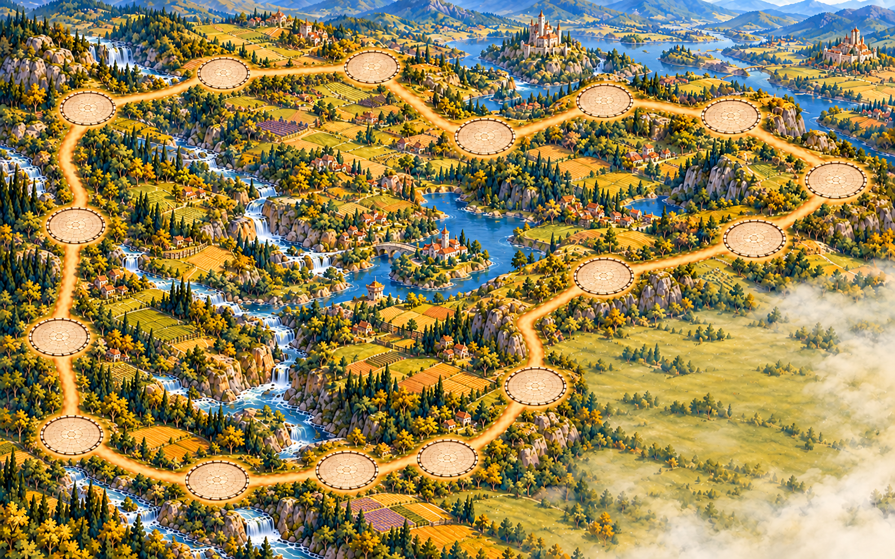
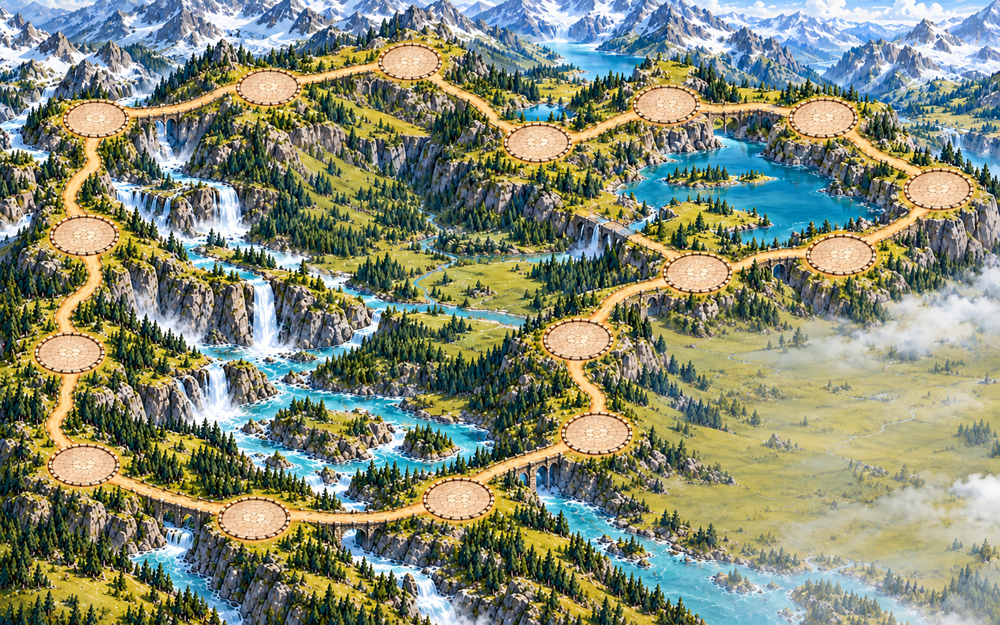
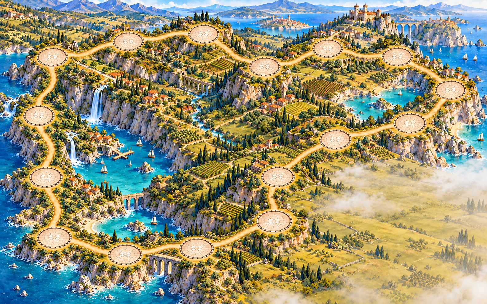
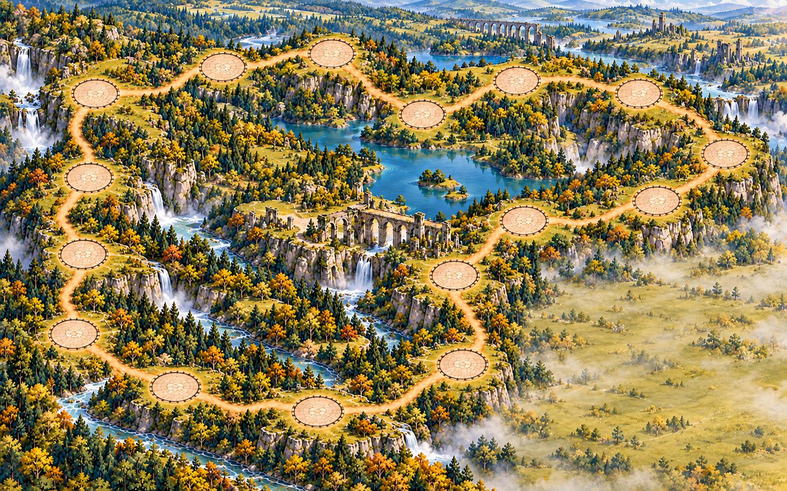
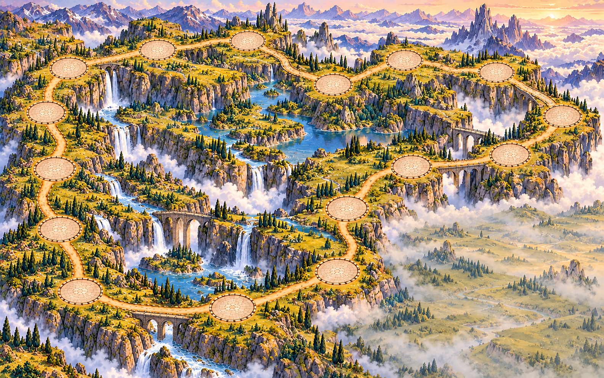

Golden Kingdom
Rolling valleys · kingdom scale

A winding journey through landscapes built for castles. Each board keeps sixteen spaces, generous left-side spacing, and a quiet bottom-right area for your hand.
Rolling valleys · kingdom scale

Mountain passes · monumental scale

Cliffside kingdoms · regional scale

Ancient wilderness · fortress scale

High plateaus · mythic scale
